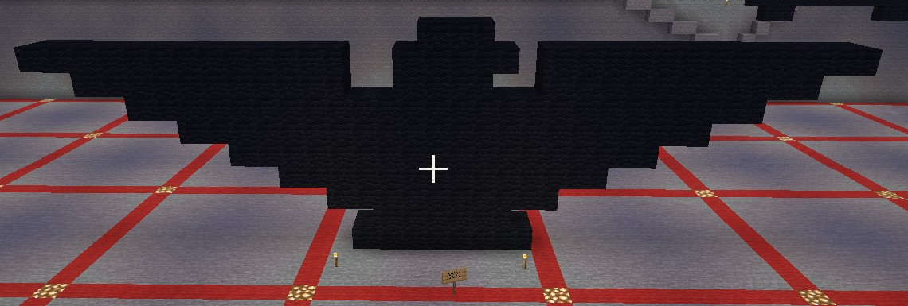

My first Minecraft sculpute.
The Bird is a digital sculpture made in Minecraft using only black wool blocks. The sculpture is based on the Huelga Bird, a symbol associated with the United Farm Workers and the farmworker movement, while also carrying associations with Chicano cultural identity and political art, as well as later use as gang insignia. These different contexts show how a simple graphic asset can take on different meanings depending on who is viewing it, using it, and where it appears. With this piece, I am attempting to take back the graphic asset and return it to its simplest abstract form and meaning. I chose to simplify the image to a single color and reconstruct it as a block based sculpture. The Huelga Bird was intentionally simplified and constructed from angular, geometric forms that made it easier to replicate by hand. I am extending that idea into Minecraft, where the image is once again built from simple blocks and reduced to its most essential visual form. The title The Bird is intentionally simple, rather than defining the symbol for the viewer, it leaves space for its history, associations, and interpretations. The Bird explores whether the symbol can exist before the associated meanings around it not as a flag, a political emblem, or a gang insignia but simply as The Bird.